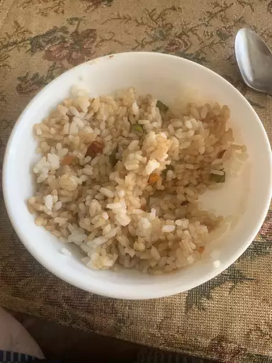

Fried Rice

Description
This recipe is a wonderful way to reuse leftover rice.
Alongside that, it's a great method of introducing vegetables into your diet!
Ingredients
NOTE: This recipe places focus on the rice. The meat can be seasoned your own way. This also applies to the rice.
- Oil
- Meat
- Cold, cooked rice
- vegetables
- Soy sauce
- Oyster sauce
Steps
- Add oil and heat the pan.
- Cook and season the meat until it's almost done.
- Remove the meat. Add more oil.
- Cook the vegetables for a few minutes.
- Add rice and cook for a few more minutes.
- Add soy sauce and oyster sauce.
- Add meat. Cook until meat is finished.
- Serve.